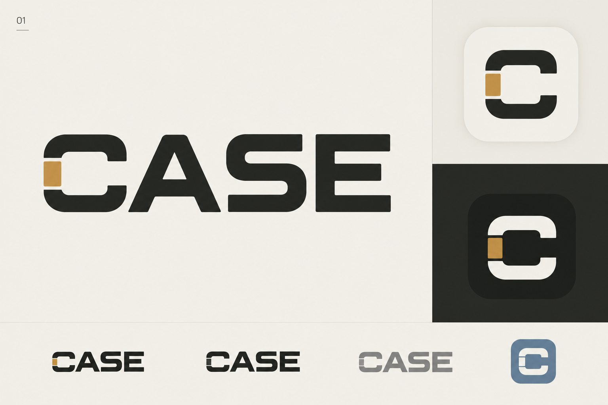
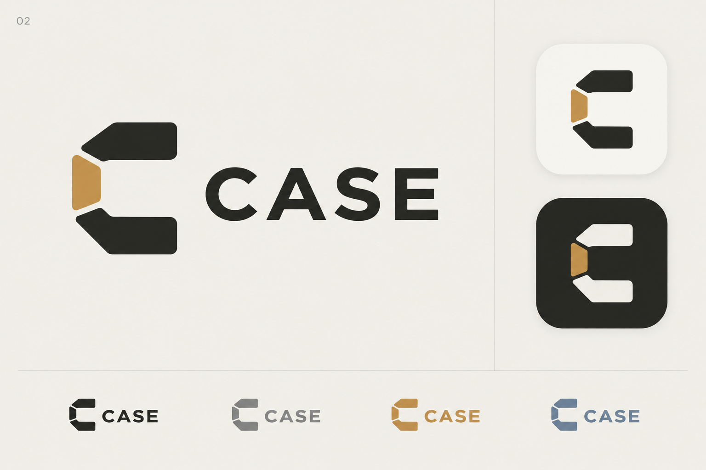
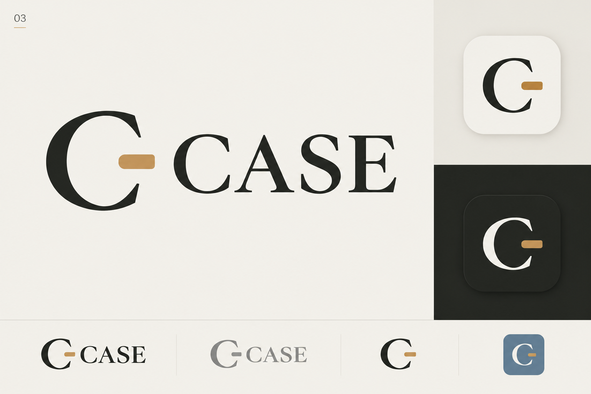

A custom wordmark that gives the C a second life as the app icon.

An independent symbol built from connected segments. The clearest expression of a practical companion.

A calmer, more literary identity that relates to the existing notebook-style interface.